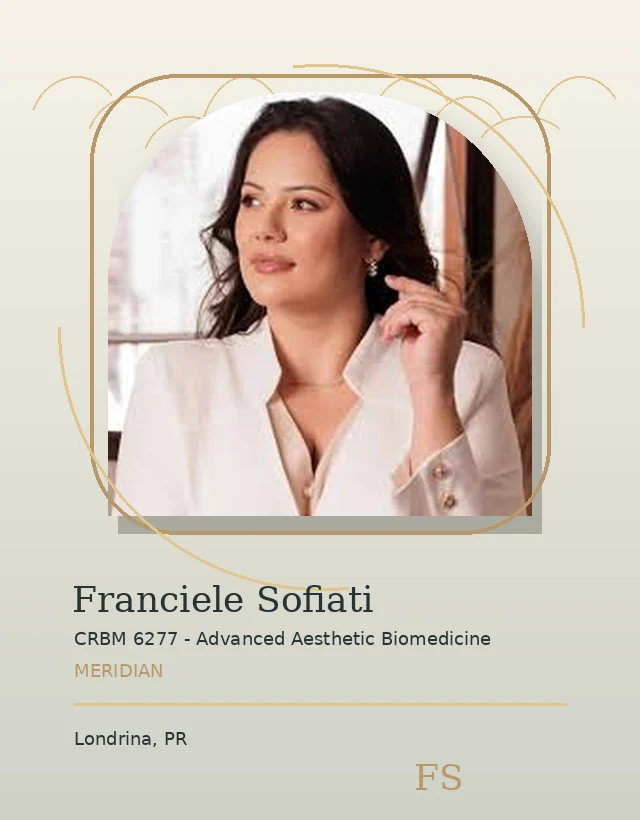
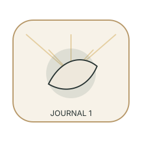

What should I ask
Useful route.
Meridian / FAQ Hero
Short answers help you choose your next step calmly.

Meridian / Skin Questions
Skin guidance should consider routine, sensitivity, and realistic goals.

Meridian / Laser Questions
Suitability should be discussed before decisions are made.
Meridian / Results Questions
Results vary and should be discussed with realistic expectations.

Meridian / Privacy Contact
You can review privacy details before sending a message.
Meridian / Reassurance Break
You do not need to know everything before asking.

Meridian / Journal Route
Explore educational notes before your consultation.
Meridian / Consultation Questions
Bring your goals, routine, comfort level, and main questions.
Useful route.
Useful route.
Useful route.
Meridian / Care Questions
Care depends on your goals, comfort, and evaluation.
Meridian / Consultation CTA
Send your question or request an evaluation.